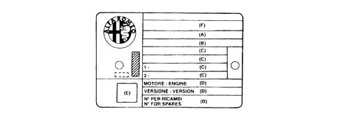

Vehicle identification data plate
- Path
- Technical Data > General information > IDENTIFICATION PLATES > Vehicle identification data plate
- Kind
- technical data / specifications
- Applies to
- all engines; all production periods
- Interactive page
- https://sloeber94.github.io/elrnDB-a156/en/#/3233241
Applies to: all engines; all production periods
The plate is fitted to the front crossmember of the engine compartment.
It contains the identification data listed below.
A. Space reserved for national homologation details.
B. Space reserved for stamping the progressive chassis number.
C. Space available for indicating maximum loads authorized by various national regulations.
D. Space reserved for indicating version and any additional information supplementary to requirements.
E. Space reserved for fume index (JTD engines only).
F. Space reserved for stamping the manufacturer's name.
